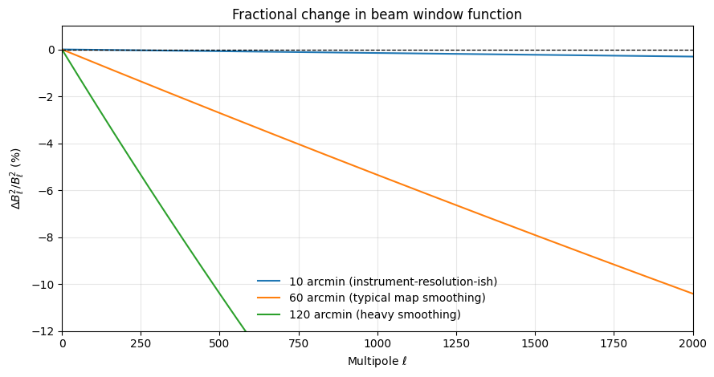
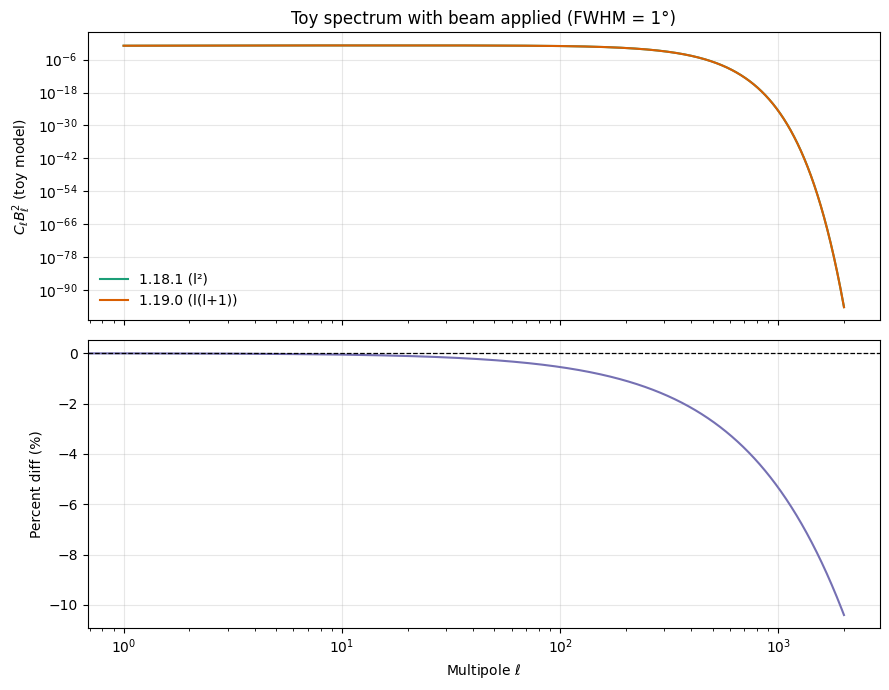

from __future__ import annotations
import math
from dataclasses import dataclass
from typing import Tuple
import matplotlib.pyplot as plt
import numpy as np
CURRENT_RELEASE = "1.19.0 (l(l+1))"
PREVIOUS_RELEASE = "1.18.1 (l²)"
@dataclass
class BeamComparison:
ell: np.ndarray
blm_old: np.ndarray
blm_new: np.ndarray
pct_diff: np.ndarray
ell_half_power: int
pct_half_power: float
pct_extreme: float
ell_extreme: int
def beam_coefficients(fwhm_rad: float, lmax: int, use_l_lplus1: bool) -> Tuple[np.ndarray, np.ndarray]:
"""Compute m=0 Gaussian beam coefficients using either l^2 or l(l+1)."""
ell = np.arange(lmax + 1, dtype=float)
sigma_sq = fwhm_rad * fwhm_rad / (8.0 * math.log(2.0))
exponent = ell * (ell + 1.0 if use_l_lplus1 else ell)
prefactor = np.sqrt((2.0 * ell + 1.0) / (4.0 * math.pi))
bl = prefactor * np.exp(-0.5 * sigma_sq * exponent)
return ell, bl
def half_power_ell(fwhm_rad: float, lmax: int) -> int:
"""Multipole where the Gaussian damping term drops to 50% of its peak."""
sigma = fwhm_rad / math.sqrt(8.0 * math.log(2.0))
target = 2.0 * math.log(2.0) / (sigma * sigma) # l(l+1) = 2 ln 2 / sigma^2
ell = int(math.ceil(0.5 * (-1.0 + math.sqrt(1.0 + 4.0 * target))))
return min(ell, lmax)
def compare_beams(fwhm_rad: float, lmax: int) -> BeamComparison:
ell, bl_old = beam_coefficients(fwhm_rad, lmax, use_l_lplus1=False)
_, bl_new = beam_coefficients(fwhm_rad, lmax, use_l_lplus1=True)
pct_diff = 100.0 * (bl_new - bl_old) / bl_old
ell_hp = half_power_ell(fwhm_rad, lmax)
pct_hp = pct_diff[ell_hp]
extreme_idx = int(np.argmin(pct_diff))
return BeamComparison(
ell=ell,
blm_old=bl_old,
blm_new=bl_new,
pct_diff=pct_diff,
ell_half_power=ell_hp,
pct_half_power=pct_hp,
pct_extreme=float(pct_diff[extreme_idx]),
ell_extreme=int(ell[extreme_idx]),
)
def beam_window(bl: np.ndarray) -> np.ndarray:
"""Return the usual beam window function B_ell^2."""
return bl * blblm_gauss breaking change (healpy 1.18.1 → 1.19.0)
healpy 1.19.0 changed the Gaussian beam spherical-harmonic coefficients from exp(-0.5 * l**2 * sigma^2) to exp(-0.5 * l*(l+1) * sigma^2) to align with gauss_beam and Challinor et al. 2000. This notebook visualizes the difference, shows percent impacts at representative multipoles, and illustrates how beam window functions shift for different smoothing scales. The goal: make it easy to judge whether a pipeline that relied on the old convention needs reprocessing.
Imports and helpers
We replicate the two formulas directly to avoid any dependency on the installed healpy version. All arrays are m=0 (temperature) coefficients; polarization scaling follows the same exponential factor.
Single-beam comparison: 1° FWHM (typical CMB smoothing)
The plots below overlay the old vs new coefficients and show the percent shift. The marker highlights the half-power multipole: where the Gaussian damping term reduces the beam to 50% of its zero-mode amplitude. This is a simple, common way to describe beam width in harmonic space.
fwhm_arcmin = 60.0
lmax = 2000
fwhm_rad = math.radians(fwhm_arcmin / 60.0)
comparison = compare_beams(fwhm_rad, lmax)
print(
f"FWHM = {fwhm_arcmin:.1f} arcmin; ell_half_power = {comparison.ell_half_power}; "
f"percent change there = {comparison.pct_half_power:.3f}%"
)
print(
f"Most negative percent change within [0, {lmax}] = "
f"{comparison.pct_extreme:.3f}% at ell = {comparison.ell_extreme}"
)
fig, (ax_top, ax_bottom) = plt.subplots(
2,
1,
figsize=(9, 7),
sharex=True,
gridspec_kw={"height_ratios": [3, 1]},
)
ax_top.semilogy(
comparison.ell,
comparison.blm_old,
label=PREVIOUS_RELEASE,
color="#1b9e77",
linewidth=1.6,
)
ax_top.semilogy(
comparison.ell,
comparison.blm_new,
label=CURRENT_RELEASE,
color="#d95f02",
linewidth=1.6,
)
ax_top.set_ylabel(r"$|b_\ell|$")
ax_top.set_title(rf"blm_gauss change at FWHM = {fwhm_arcmin:.1f} arcmin, $\ell_{{\max}}$ = {lmax}")
ax_top.legend(loc="upper right", frameon=False)
ax_top.grid(alpha=0.3)
ax_bottom.plot(
comparison.ell,
comparison.pct_diff,
color="#7570b3",
linewidth=1.5,
)
ax_bottom.axhline(0.0, color="black", linestyle="--", linewidth=0.9)
ax_bottom.plot(
[comparison.ell_half_power],
[comparison.pct_half_power],
marker="o",
color="#e7298a",
label=f"Half-power ℓ={comparison.ell_half_power}",
)
ax_bottom.set_ylabel("Percent diff\n(new - old)/old")
ax_bottom.set_xlabel(r"Multipole $\ell$")
ax_bottom.grid(alpha=0.3)
ax_bottom.legend(loc="lower left", frameon=False)
plt.tight_layout()
plt.show()FWHM = 60.0 arcmin; ell_half_power = 159; percent change there = -0.436%
Most negative percent change within [0, 2000] = -5.345% at ell = 2000
How the window function shifts for different beams
The beam window function is \(B_\ell^2\). Here we plot the fractional change of \(B_\ell^2\) for three beam sizes to see how the impact grows with narrowing beams.
beam_cases = [
("10 arcmin (instrument-resolution-ish)", 10.0),
("60 arcmin (typical map smoothing)", 60.0),
("120 arcmin (heavy smoothing)", 120.0),
]
plt.figure(figsize=(9, 4.8))
for label, fwhm in beam_cases:
comp = compare_beams(math.radians(fwhm / 60.0), lmax)
frac = (beam_window(comp.blm_new) - beam_window(comp.blm_old)) / beam_window(comp.blm_old)
plt.plot(comp.ell, 100.0 * frac, label=label, linewidth=1.5)
plt.axhline(0, color="black", linestyle="--", linewidth=0.9)
plt.xlim(0, lmax)
plt.ylim(-12, 1)
plt.xlabel(r"Multipole $\ell$")
plt.ylabel(r"$\Delta B_\ell^2 / B_\ell^2$ (%)")
plt.title("Fractional change in beam window function")
plt.grid(alpha=0.3)
plt.legend(frameon=False)
plt.tight_layout()
plt.show()/tmp/ipykernel_3614767/797072927.py:10: RuntimeWarning: invalid value encountered in divide
frac = (beam_window(comp.blm_new) - beam_window(comp.blm_old)) / beam_window(comp.blm_old)
Effect on a toy power spectrum
To get an intuition for spectra-level impacts, take a simple toy model \(C_\ell = 1/(\ell+1)\): a smooth, monotonically decaying spectrum that avoids divergence at \(\ell=0\) and mimics high-\(\ell\) damping without acoustic features. Applying the two beam windows shows how the change redistributes power.
ell = np.arange(lmax + 1, dtype=float)
cl_toy = 1.0 / (ell + 1.0) # avoids divide-by-zero at ell=0
_, bl_old = beam_coefficients(fwhm_rad, lmax, use_l_lplus1=False)
_, bl_new = beam_coefficients(fwhm_rad, lmax, use_l_lplus1=True)
cl_old_beamed = cl_toy * beam_window(bl_old)
cl_new_beamed = cl_toy * beam_window(bl_new)
ratio = (cl_new_beamed - cl_old_beamed) / cl_old_beamed
fig, (ax0, ax1) = plt.subplots(2, 1, figsize=(9, 7), sharex=True)
ax0.loglog(ell[1:], cl_old_beamed[1:], label=PREVIOUS_RELEASE, color="#1b9e77")
ax0.loglog(ell[1:], cl_new_beamed[1:], label=CURRENT_RELEASE, color="#d95f02")
ax0.set_ylabel(r"$C_\ell B_\ell^2$ (toy model)")
ax0.set_title("Toy spectrum with beam applied (FWHM = 1°)")
ax0.grid(alpha=0.3)
ax0.legend(frameon=False)
ax1.plot(ell, 100.0 * ratio, color="#7570b3")
ax1.axhline(0, color="black", linestyle="--", linewidth=0.9)
ax1.set_xlabel(r"Multipole $\ell$")
ax1.set_ylabel("Percent diff (%)")
ax1.grid(alpha=0.3)
plt.tight_layout()
plt.show()
Where else is blm_gauss used?
A quick ripgrep scan in the repository (tests and docs only) shows no other functions call blm_gauss internally; it is exposed as a user-facing helper. Downstream impacts occur when these coefficients are injected into custom pipelines (e.g., multiplying custom \(C_\ell\) or \(a_{\ell m}\) by blm_gauss to apply a Gaussian beam). Those pipelines should regenerate coefficients under 1.19.0 to stay consistent.
import shutil, subprocess, textwrap
if shutil.which("rg") is None:
print("ripgrep (rg) is not available in this environment.")
else:
scan = subprocess.run(
["rg", "blm_gauss"],
cwd="..",
capture_output=True,
text=True,
check=False,
)
if scan.returncode not in (0, 1): # 1 means no matches
print(f"rg failed with code {scan.returncode}: {scan.stderr}")
else:
print(textwrap.dedent(scan.stdout))Takeaways
- The new convention damps high-\(\ell\) modes more strongly. For a 1° beam, the percent change at the half-power multipole is modest (~0.5%), but reaches several percent near \(\ell_{\max}=2000\).
- Narrow beams (e.g., 10 arcmin) see the largest fractional changes because the \(\ell(\ell+1)\) factor grows faster than \(\ell^2\) at moderate \(\ell\).
- Pipelines that multiply custom \(C_\ell\) or \(a_{\ell m}\) by
blm_gaussshould regenerate those coefficients with 1.19.0 to stay consistent withgauss_beamand the Challinor et al. convention.
Reporting Issues
If you encounter any problems or have questions regarding healpy, please open an issue on the official GitHub repository: Healpy GitHub Repository